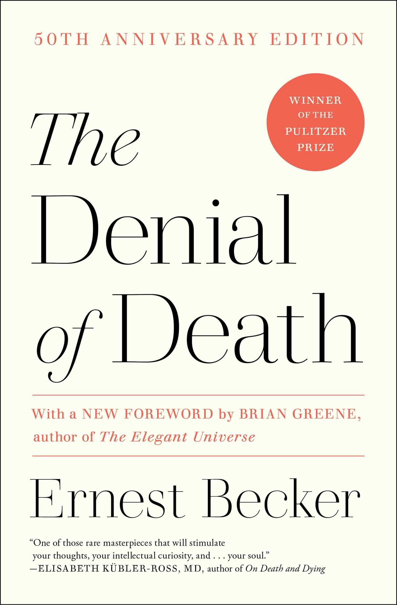
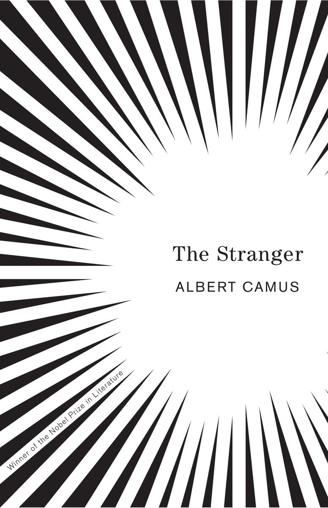
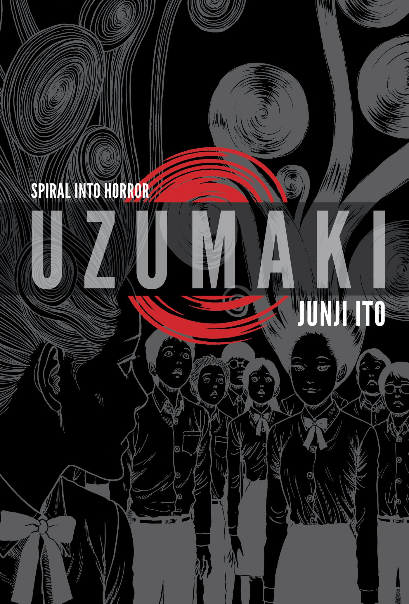

Mis Intereses
Cine
Uno de mis gustos más grandes es el cine y las películas, mis géneros favoritos son el drama y las thrillers, soy muy fan de una red social llamada letterboxd, donde puedes compartir cosas relacionadas con el mundo del cine.
Link de mi letterboxdEstas son mis películas favoritas:
- Perfect Blue
- Before Sunrise
- World of Tomorrow
- Suspiria


_POSTER.jpg)

Música
Al igual que con el cine la musica siempre me ha parecido gran parte de mi vida. Y también existe una página para ratear música y compartir tus albumes favoritos.
Link de mi Album of the YearEstos son mis albumes favoritos:
- Punsiher
- Bloom
- Either/Or
- The Glow, Pt.2


Literatura
Siempre fui gran fan de la literatura, sobre todo la literatura de no ficción, para los libros si existe una aplicación similar a las otras dos en goodreads pero no soy un usuario habitual
Igualmente estos son mis libros favoritos:
- Averno
- The Denial of Death 
- The Stranger 
- Uzumaki 